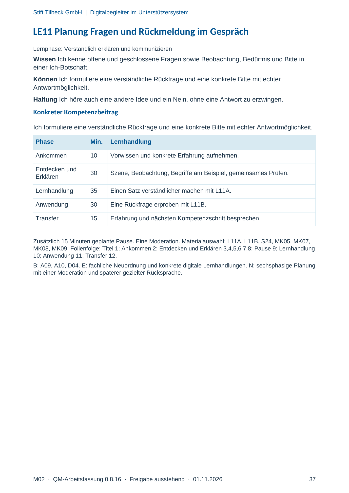
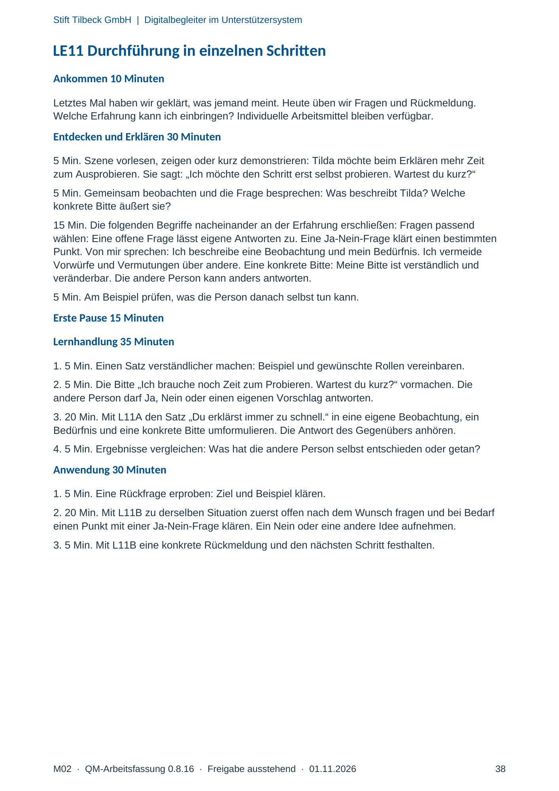
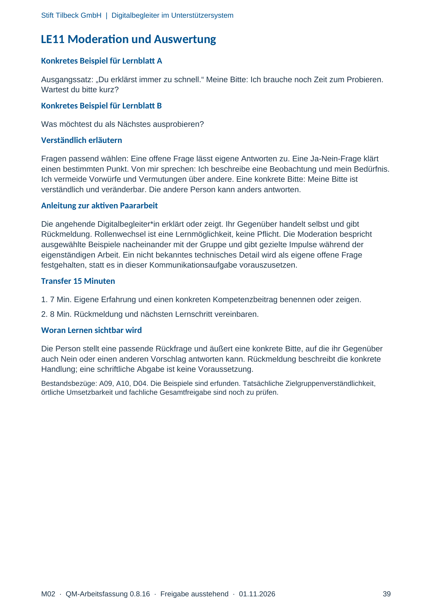

M02 · Originalseite 37, 38, 39
Handbuch und Muster
Gezielte Original-Druckauswahl.
Fragen und Ankreuzfelder werden auf dem Ausdruck bearbeitet. Die Lesefassung speichert keine Antworten.
Lesefassung · Seite 37
Stift Tilbeck GmbH | Digitalbegleiter im Unterstützersystem
LE11 Planung Fragen und Rückmeldung im Gespräch
Lernphase: Verständlich erklären und kommunizieren
Wissen Ich kenne offene und geschlossene Fragen sowie Beobachtung, Bedürfnis und Bitte in
einer Ich-Botschaft.
Können Ich formuliere eine verständliche Rückfrage und eine konkrete Bitte mit echter
Antwortmöglichkeit.
Haltung Ich höre auch eine andere Idee und ein Nein, ohne eine Antwort zu erzwingen.
Konkreter Kompetenzbeitrag
Ich formuliere eine verständliche Rückfrage und eine konkrete Bitte mit echter Antwortmöglichkeit.
Phase Min. Lernhandlung
Ankommen 10 Vorwissen und konkrete Erfahrung aufnehmen.
Entdecken und
Erklären 30 Szene, Beobachtung, Begriffe am Beispiel, gemeinsames Prüfen.
Lernhandlung 35 Einen Satz verständlicher machen mit L11A.
Anwendung 30 Eine Rückfrage erproben mit L11B.
Transfer 15 Erfahrung und nächsten Kompetenzschritt besprechen.
Zusätzlich 15 Minuten geplante Pause. Eine Moderation. Materialauswahl: L11A, L11B, S24, MK05, MK07,
MK08, MK09. Folienfolge: Titel 1; Ankommen 2; Entdecken und Erklären 3,4,5,6,7,8; Pause 9; Lernhandlung
10; Anwendung 11; Transfer 12.
B: A09, A10, D04. E: fachliche Neuordnung und konkrete digitale Lernhandlungen. N: sechsphasige Planung
mit einer Moderation und späterer gezielter Rücksprache.
Originalseite ansehen

Lesefassung · Seite 38
Stift Tilbeck GmbH | Digitalbegleiter im Unterstützersystem
LE11 Durchführung in einzelnen Schritten
Ankommen 10 Minuten
Letztes Mal haben wir geklärt, was jemand meint. Heute üben wir Fragen und Rückmeldung.
Welche Erfahrung kann ich einbringen? Individuelle Arbeitsmittel bleiben verfügbar.
Entdecken und Erklären 30 Minuten
5 Min. Szene vorlesen, zeigen oder kurz demonstrieren: Tilda möchte beim Erklären mehr Zeit
zum Ausprobieren. Sie sagt: „Ich möchte den Schritt erst selbst probieren. Wartest du kurz?“
5 Min. Gemeinsam beobachten und die Frage besprechen: Was beschreibt Tilda? Welche
konkrete Bitte äußert sie?
15 Min. Die folgenden Begriffe nacheinander an der Erfahrung erschließen: Fragen passend
wählen: Eine offene Frage lässt eigene Antworten zu. Eine Ja-Nein-Frage klärt einen bestimmten
Punkt. Von mir sprechen: Ich beschreibe eine Beobachtung und mein Bedürfnis. Ich vermeide
Vorwürfe und Vermutungen über andere. Eine konkrete Bitte: Meine Bitte ist verständlich und
veränderbar. Die andere Person kann anders antworten.
5 Min. Am Beispiel prüfen, was die Person danach selbst tun kann.
Erste Pause 15 Minuten
Lernhandlung 35 Minuten
1. 5 Min. Einen Satz verständlicher machen: Beispiel und gewünschte Rollen vereinbaren.
2. 5 Min. Die Bitte „Ich brauche noch Zeit zum Probieren. Wartest du kurz?“ vormachen. Die
andere Person darf Ja, Nein oder einen eigenen Vorschlag antworten.
3. 20 Min. Mit L11A den Satz „Du erklärst immer zu schnell.“ in eine eigene Beobachtung, ein
Bedürfnis und eine konkrete Bitte umformulieren. Die Antwort des Gegenübers anhören.
4. 5 Min. Ergebnisse vergleichen: Was hat die andere Person selbst entschieden oder getan?
Anwendung 30 Minuten
1. 5 Min. Eine Rückfrage erproben: Ziel und Beispiel klären.
2. 20 Min. Mit L11B zu derselben Situation zuerst offen nach dem Wunsch fragen und bei Bedarf
einen Punkt mit einer Ja-Nein-Frage klären. Ein Nein oder eine andere Idee aufnehmen.
3. 5 Min. Mit L11B eine konkrete Rückmeldung und den nächsten Schritt festhalten.
Originalseite ansehen

Lesefassung · Seite 39
Stift Tilbeck GmbH | Digitalbegleiter im Unterstützersystem
LE11 Moderation und Auswertung
Konkretes Beispiel für Lernblatt A
Ausgangssatz: „Du erklärst immer zu schnell.“ Meine Bitte: Ich brauche noch Zeit zum Probieren.
Wartest du bitte kurz?
Konkretes Beispiel für Lernblatt B
Was möchtest du als Nächstes ausprobieren?
Verständlich erläutern
Fragen passend wählen: Eine offene Frage lässt eigene Antworten zu. Eine Ja-Nein-Frage klärt
einen bestimmten Punkt. Von mir sprechen: Ich beschreibe eine Beobachtung und mein Bedürfnis.
Ich vermeide Vorwürfe und Vermutungen über andere. Eine konkrete Bitte: Meine Bitte ist
verständlich und veränderbar. Die andere Person kann anders antworten.
Anleitung zur aktiven Paararbeit
Die angehende Digitalbegleiter*in erklärt oder zeigt. Ihr Gegenüber handelt selbst und gibt
Rückmeldung. Rollenwechsel ist eine Lernmöglichkeit, keine Pflicht. Die Moderation bespricht
ausgewählte Beispiele nacheinander mit der Gruppe und gibt gezielte Impulse während der
eigenständigen Arbeit. Ein nicht bekanntes technisches Detail wird als eigene offene Frage
festgehalten, statt es in dieser Kommunikationsaufgabe vorauszusetzen.
Transfer 15 Minuten
1. 7 Min. Eigene Erfahrung und einen konkreten Kompetenzbeitrag benennen oder zeigen.
2. 8 Min. Rückmeldung und nächsten Lernschritt vereinbaren.
Woran Lernen sichtbar wird
Die Person stellt eine passende Rückfrage und äußert eine konkrete Bitte, auf die ihr Gegenüber
auch Nein oder einen anderen Vorschlag antworten kann. Rückmeldung beschreibt die konkrete
Handlung; eine schriftliche Abgabe ist keine Voraussetzung.
Bestandsbezüge: A09, A10, D04. Die Beispiele sind erfunden. Tatsächliche Zielgruppenverständlichkeit,
örtliche Umsetzbarkeit und fachliche Gesamtfreigabe sind noch zu prüfen.
Originalseite ansehen
